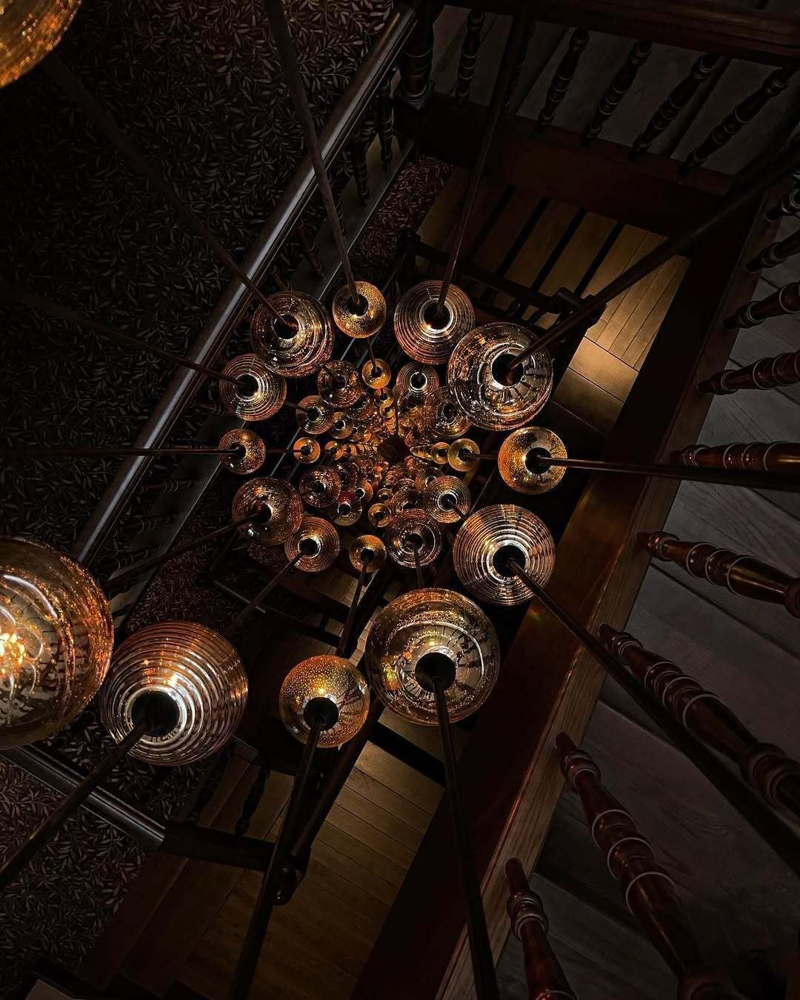
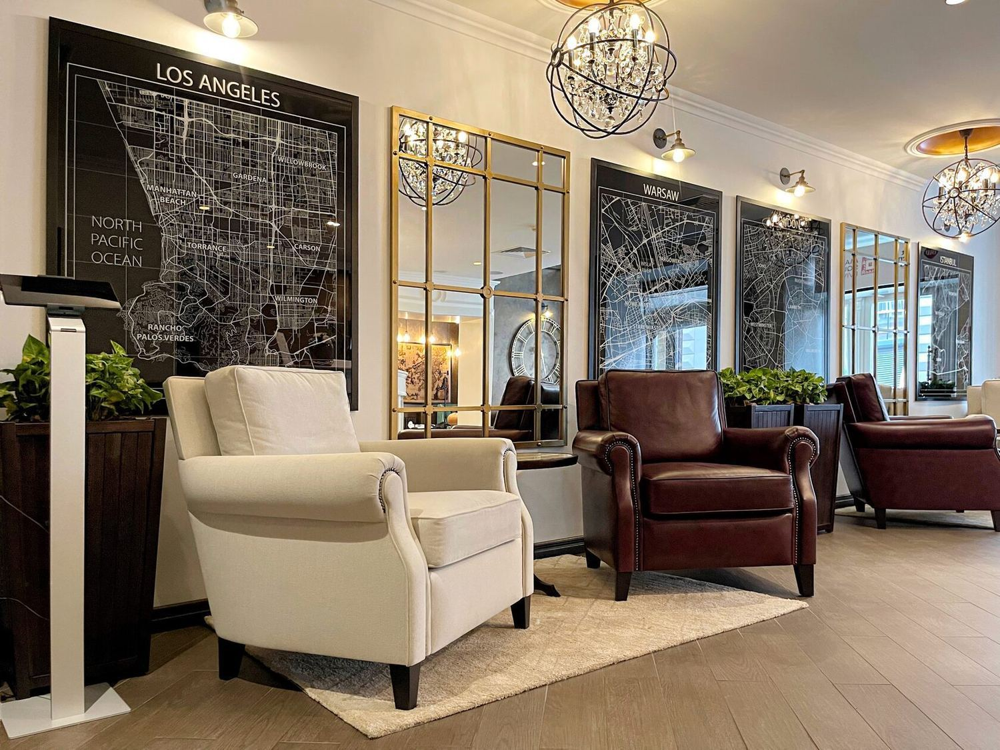

Архівна листівка № 01

Історичний портрет · джерело: Вікіпедія
1576Дзюрджі Бойм у Львові
Купець, секретар короля Стефана Баторія, згодом бургомістр.
Англійська версія — у наступній ітерації концепту.
Готель займає чотири історичні кам'яниці XV–XIX століть у Старому місті Львова. Головний дім — Кам'яниця Дзюрджівська, XVIII століття. Назви трьох інших домів [CONFIRM]
Старе місто Львова — об'єкт Світової спадщини з 1998 року.
Каміння, що пам'ятає чотири століття
Історичний портрет · джерело: Вікіпедія
Купець, секретар короля Стефана Баторія, згодом бургомістр.
Збудовано Каплицю Боїмів.

Історичний портрет · джерело: Вікіпедія
Син Дзюрджі — лікар короля Сигізмунда III.
Онук Дзюрджі — місіонер у Китаї, автор «Flora Sinensis».

Сучасне фото · умовне
Горілчана марка, постачальник цісарсько-королівського двору Австро-Угорщини.

Сучасне фото · умовне
Best Western Plus Market Square Lviv — перший Best Western в Україні.
У кам'яницях збереглися середньовічні підвали, дерев'яні сходи, вікна, двері та цегляна кладка.

Умовне фото

Умовне фото
«У Львові можна загубитися — і знайти себе.»